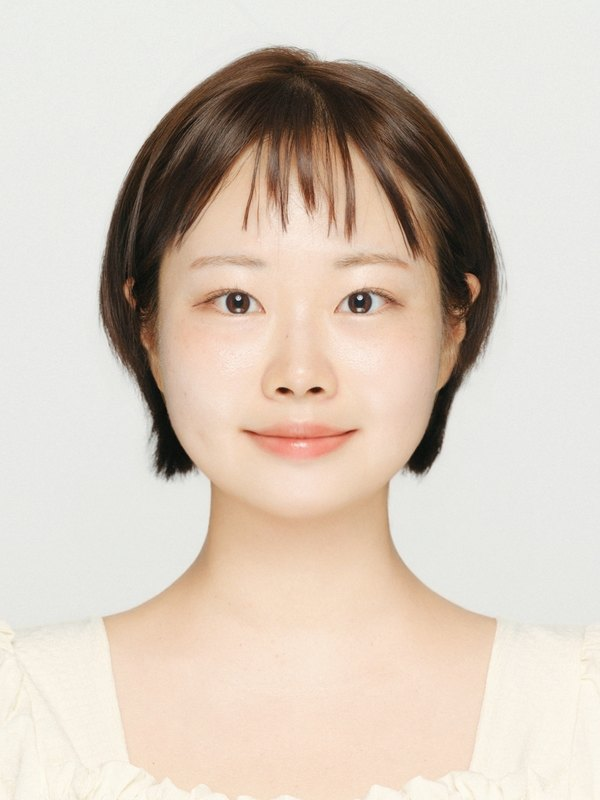
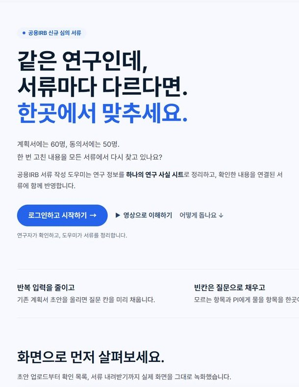
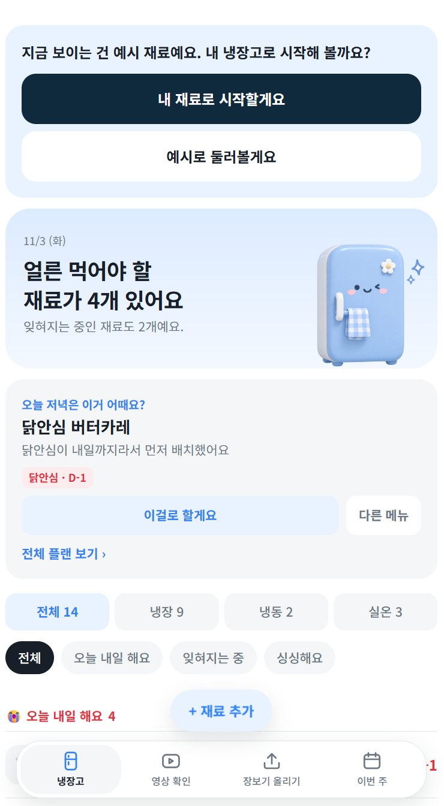
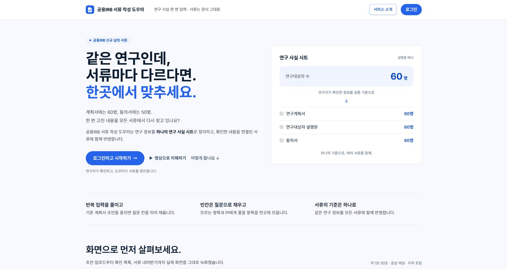

<title>박여운 포트폴리오</title>
<meta name="claude:viewport-fit-sides" content="cover">
<link rel="stylesheet" href="https://fonts.googleapis.com/css2?family=Noto+Sans+KR:wght@400;500;700;800&display=swap">
<style>
/* Layout: 한 장짜리 스크롤 사이트. 히어로 → 역량 → 서비스 2개 → 핵심 역량 → 프로젝트(상세) → 연락처.
   Color: 남색(구조), 파랑(확정), 호박색(가정·미확인). Type: Noto Sans KR 단일 서체, 굵기로 위계. */
:root{
  --bg:#FBFAFF; --surface:#FFFFFF; --soft:#F1EEFF; --line:#E4DFF7; --tint:#EAE6FF; --stage:#D9D2FC; --shell:#1E1B33;
  --ink:#16142A; --muted:#55526E;
  --navy:#1E1B33; --navy-2:#2D2A4A; --on-navy:#FFFFFF; --on-navy-muted:#D6D2F0;
  --accent-fill:#6D57E0; --accent-text:#5B45D0;
  --amber:#F0A93B; --amber-soft:#FCEFD6; --on-amber:#1B2438; --amber-text:#8A5A00;
  --s1:#E4DFF7; --s2:#1E1B33; --s3:#6D57E0; --s4:#A599F2; --s5:#CFC8F8; --s6:#F0A93B;
  --font:'Noto Sans KR','Apple SD Gothic Neo','Malgun Gothic',Arial,sans-serif;
}
@media (prefers-color-scheme: dark){:root:not([data-theme="light"]){
  --bg:#12101F; --surface:#1C1930; --soft:#26223F; --line:#342F55; --tint:#2A2550; --stage:#2C2652; --shell:#4A4474;
  --ink:#F1EFFA; --muted:#BDB8D6;
  --navy:#2B2650; --navy-2:#3A3468;
  --accent-text:#B7ABFF; --amber-soft:#3A3120; --amber-text:#F0C06A;
  --s1:#3A3560; --s2:#D6D0FA; --s3:#A599F2; --s4:#7A6BD8; --s5:#8C86B0; --s6:#F0A93B;
  color-scheme:dark}}
:root[data-theme="dark"]{
  --bg:#12101F; --surface:#1C1930; --soft:#26223F; --line:#342F55; --tint:#2A2550; --stage:#2C2652; --shell:#4A4474;
  --ink:#F1EFFA; --muted:#BDB8D6;
  --navy:#2B2650; --navy-2:#3A3468;
  --accent-text:#B7ABFF; --amber-soft:#3A3120; --amber-text:#F0C06A;
  --s1:#3A3560; --s2:#D6D0FA; --s3:#A599F2; --s4:#7A6BD8; --s5:#8C86B0; --s6:#F0A93B;
  color-scheme:dark}
*{box-sizing:border-box}
html{scroll-behavior:smooth;scroll-padding-top:84px}
@media (prefers-reduced-motion:reduce){html{scroll-behavior:auto}}
body{background:var(--bg);color:var(--ink);font-family:var(--font);font-size:17px;line-height:1.65;margin:0;padding-inline:0}
body::before{content:"";position:fixed;inset:0 0 auto;height:env(safe-area-inset-top,0px);background:var(--bg);z-index:30}
a{color:inherit}
:focus-visible{outline:3px solid var(--amber);outline-offset:3px;border-radius:4px}
.wrap{max-width:1120px;margin-inline:auto;padding-left:max(16px,env(safe-area-inset-left,0px));padding-right:max(16px,env(safe-area-inset-right,0px))}
h1,h2,h3{text-wrap:balance;margin:0;line-height:1.2}
p{margin:0}
.eyebrow{display:inline-block;font-size:13px;font-weight:700;letter-spacing:.14em;text-transform:uppercase;padding:6px 12px;border-radius:6px;background:var(--navy);color:var(--on-navy)}
.eyebrow.amber{background:var(--amber);color:var(--on-amber)}
.muted{color:var(--muted)}

/* nav */
.nav{position:sticky;top:env(safe-area-inset-top,0px);z-index:20;background:var(--bg)}
.nav .wrap{display:flex;align-items:center;gap:24px;padding-block:14px;overflow-x:auto;white-space:nowrap}
.nav b{font-weight:800;font-size:20px;margin-right:auto;flex:none}
.nav a{font-size:15px;text-decoration:none;color:var(--muted);flex:none}
.nav a:hover{color:var(--ink)}
.nav a.cta{background:var(--ink);color:var(--bg);font-weight:700;padding:9px 20px;border-radius:999px}

/* hero */
.hero{background:var(--bg)}
.hero .wrap{display:flex;flex-direction:column;align-items:center;text-align:center;padding-block:48px 56px}
.badge{display:inline-flex;align-items:center;gap:10px;font-size:19px;font-weight:700;color:var(--muted)}
.badge i{width:32px;height:32px;border-radius:10px;background:linear-gradient(135deg,#A599F2,#6D57E0);display:block}
.hero h1{font-size:clamp(38px,7.2vw,84px);font-weight:800;line-height:1.14;letter-spacing:-.02em;margin-block:22px 20px;color:var(--ink)}
.hero h1 u{text-decoration:none;color:var(--accent-text);background:linear-gradient(var(--accent-text),var(--accent-text)) 0 100%/100% 5px no-repeat;padding-bottom:4px}
.hero .who{font-size:20px;font-weight:700;color:var(--ink)}
.hero .lede{color:var(--muted);font-size:20px;max-width:30em;margin-top:8px}
.ctas{display:flex;flex-wrap:wrap;gap:12px;justify-content:center;margin-top:30px}
.btn-p,.btn-s{font-size:18px;font-weight:700;text-decoration:none;padding:14px 30px;border-radius:999px}
.btn-p{background:var(--accent-fill);color:#fff}
.btn-s{background:var(--tint);color:var(--accent-text)}
.chip{border:2px solid #7E90C2;color:#fff;font-size:15px;font-weight:500;padding:5px 16px;border-radius:999px}
.stage{margin-top:48px;width:100%;height:520px;border-radius:32px;overflow:hidden;background:linear-gradient(180deg,var(--bg),var(--stage));display:flex;justify-content:center;align-items:flex-start;padding-top:36px;text-align:left}
.stage-note{font-size:14px;color:var(--muted);margin-top:16px}
.big{font-size:42px;font-weight:800;line-height:1.1;letter-spacing:-.02em}
.big small{font-size:24px;font-weight:700}
.vbars{display:flex;align-items:flex-end;gap:7px;height:140px}
.vbars i{flex:1;border-radius:8px 8px 4px 4px;background:var(--s5);opacity:.55;display:block}
.vbars i.on{background:var(--accent-fill);opacity:1}
.vbars.dk i{background:#4A4474;opacity:1}
.vbars.dk i.on{background:#A599F2}
.mini{display:flex;align-items:center;gap:8px;font-size:13px;font-weight:700;color:var(--muted)}
.mini em{width:9px;height:9px;border-radius:50%;background:#2FBF71;display:block}

/* sections */
section{padding-block:72px}
section.alt{background:var(--soft)}
section.case-page{background:var(--bg)}
.back{display:inline-flex;align-items:center;gap:8px;font-weight:700;color:var(--accent-text);text-decoration:none;margin-bottom:28px;padding:8px 18px;border-radius:999px;background:var(--tint)}
.pager{display:grid;grid-template-columns:1fr 1fr;gap:16px;margin-top:56px}
.pager a{display:flex;flex-direction:column;gap:4px;background:var(--surface);border:1px solid var(--line);border-radius:18px;padding:18px 22px;text-decoration:none;font-weight:700;font-size:18px}
.pager a:hover{border-color:var(--accent-text)}
.pager a.nx{text-align:right}
.pager small{font-size:13px;color:var(--accent-text);letter-spacing:.08em}
.sec-head{display:flex;flex-direction:column;gap:14px;margin-bottom:36px;align-items:flex-start}
.sec-head h2{font-size:clamp(28px,4.2vw,44px);font-weight:800}
.sec-head p{max-width:40em}

/* abilities */
.grid2{display:grid;grid-template-columns:1fr 1fr;gap:20px}
.card{background:var(--surface);border:1px solid var(--line);border-radius:20px;padding:26px}
.ability{display:flex;gap:20px;align-items:center}
.ico{flex:none;width:68px;height:68px;border-radius:50%;background:var(--navy);display:grid;place-items:center}
.ico svg{width:32px;height:32px;stroke:#fff;fill:none;stroke-width:2;stroke-linecap:round;stroke-linejoin:round}
.ability h3{font-size:22px;margin-bottom:4px}
.quote{margin-top:24px;background:var(--navy);color:#fff;border-radius:20px;padding:26px 30px;font-size:20px;font-weight:700;line-height:1.55;border-left:10px solid var(--amber)}

/* overview */
.tally{display:flex;flex-wrap:wrap;gap:12px;margin-bottom:24px}
.tally div{display:flex;align-items:baseline;gap:10px;padding:10px 20px;border-radius:14px;color:#fff}
.tally b{font-size:32px;font-weight:800}
.t-ok{background:var(--accent-fill)} .t-des{background:var(--amber);color:var(--on-amber)!important}
.rows{display:flex;flex-direction:column;gap:12px}
.row::after{content:"\2192";font-weight:800;font-size:22px;color:var(--accent-text)}
.row{display:grid;grid-template-columns:48px minmax(0,1.1fr) minmax(0,1.4fr) auto auto;gap:20px;align-items:center;background:var(--surface);border:1px solid var(--line);border-radius:16px;padding:16px 22px;text-decoration:none}
.row:hover{border-color:var(--accent-text)}
.num{width:48px;height:48px;border-radius:50%;background:var(--navy);color:#fff;display:grid;place-items:center;font-weight:800}
.row h3{font-size:20px}
.status{font-size:14px;font-weight:700;padding:6px 16px;border-radius:999px;color:#fff;background:var(--accent-fill);white-space:nowrap;text-align:center}
.status.dep{background:var(--navy)} .status.des{background:var(--amber);color:var(--on-amber)}

/* case layout */
.case{display:grid;grid-template-columns:minmax(0,1fr) auto;gap:48px;align-items:center}
.case.flip{grid-template-columns:auto minmax(0,1fr)}
.case.flip .mocks{order:-1}
.case h2{font-size:clamp(28px,4vw,40px);font-weight:800;margin-block:14px 18px}
.lbl{font-size:13px;font-weight:700;letter-spacing:.12em;color:var(--accent-text);text-transform:uppercase;margin-bottom:8px}
.stack{display:flex;flex-direction:column;gap:16px}
.feat{list-style:none;margin:0;padding:0;display:flex;flex-direction:column;gap:10px}
.feat li{display:flex;gap:12px}
.feat li::before{content:"";flex:none;width:8px;height:8px;border-radius:50%;background:var(--accent-fill);margin-top:11px}
.feat b{font-weight:700}
.callout{background:var(--amber-soft);border-radius:16px;padding:16px 20px;font-size:15.5px}
.callout b{color:var(--amber-text)}
.navy-box{background:var(--navy);color:#fff;border-radius:16px;padding:18px 22px;font-weight:700;border-left:8px solid var(--amber)}
.link{font-weight:700;color:var(--accent-text)}
.mocks{display:flex;gap:20px;justify-content:center;flex-wrap:wrap}

/* phone mock */
.phone{width:268px;height:520px;flex:none;background:var(--surface);border:8px solid var(--shell);border-radius:40px;padding:30px 16px 18px;display:flex;flex-direction:column;gap:11px;overflow:hidden;box-shadow:0 18px 40px rgba(10,16,40,.22);color:var(--ink)}
.phone.shot{padding:0}
.phone.shot img{width:100%;height:100%;object-fit:cover;object-position:top;display:block}
.shot-cap{font-size:13px;color:var(--muted);margin-top:10px;text-align:center}
.winshot{border:2px solid var(--navy);border-radius:18px;overflow:hidden;min-width:0;background:#fff}
.winshot img{width:100%;display:block}
.p-lbl{font-size:13px;font-weight:700;color:var(--accent-text)}

.p-h{font-size:20px;font-weight:800;line-height:1.3}
.p-text{font-size:14px;line-height:1.45}
.pill{display:inline-block;font-size:13px;font-weight:700;padding:4px 12px;border-radius:999px;background:var(--soft);color:var(--muted)}
.pill.on{background:var(--navy);color:#fff}
.pill.out{background:transparent;border:2px solid var(--navy);color:var(--ink);text-align:center}
.opt{border:2px solid var(--line);border-radius:12px;padding:9px 14px;font-size:15px}
.opt.on{background:var(--navy);border-color:var(--navy);color:#fff;font-weight:700}
.btn{margin-top:auto;background:var(--accent-fill);color:#fff;border-radius:12px;padding:10px;text-align:center;font-weight:700;font-size:15px}
.steps{display:flex;gap:4px}.steps i{flex:1;height:6px;border-radius:3px;background:var(--line)}.steps i.on{background:var(--accent-fill)}
.bubble{background:var(--soft);border-radius:16px;padding:9px 13px;font-size:14px;line-height:1.45}
.bubble.me{background:var(--accent-fill);color:#fff;align-self:flex-end}
.srow{display:flex;justify-content:space-between;align-items:center;background:var(--bg);border-radius:10px;padding:9px 12px;font-size:14px}
.srow.warn{background:var(--amber-soft)}
.bars{display:flex;height:30px;border-radius:15px;overflow:hidden}
.bars i{display:block}
.legend{display:grid;grid-template-columns:1fr 1fr;gap:6px 8px;font-size:13px}
.legend span,.lg span{display:flex;align-items:center;gap:7px}
.legend em,.lg em{width:12px;height:12px;border-radius:50%;flex:none;display:block}
.cam{height:130px;background:var(--soft);border-radius:14px;display:grid;place-items:center}
.cam i{width:52px;height:52px;border:5px solid var(--navy);border-radius:50%}
.skel{height:10px;border-radius:5px;background:var(--s5)}

/* infographics */
.info{background:var(--surface);border:1px solid var(--line);border-radius:20px;padding:24px;display:flex;flex-direction:column;gap:12px}
.info .bar{display:flex;height:40px;border-radius:20px;overflow:hidden;background:var(--soft)}
.lg{display:grid;grid-template-columns:repeat(3,minmax(0,1fr));gap:8px;font-size:14px}
.flow{display:grid;grid-template-columns:repeat(4,minmax(0,1fr));gap:12px;margin-block:28px}
.step{background:var(--surface);border:1px solid var(--line);border-radius:18px;padding:20px;position:relative}
.step small{display:block;font-size:12px;font-weight:700;letter-spacing:.12em;color:var(--accent-text);margin-bottom:6px}
.step h3{font-size:19px;margin-bottom:6px}
.step p{font-size:14.5px;color:var(--muted)}
.step.core{background:var(--navy);border-color:var(--navy)}
.step.core small{color:var(--amber)}.step.core h3{color:#fff}.step.core p{color:var(--on-navy-muted)}
.stats{display:grid;grid-template-columns:repeat(3,minmax(0,1fr));gap:12px;margin-bottom:24px}
.stat{background:var(--surface);border:1px solid var(--line);border-radius:18px;padding:18px 22px;display:flex;align-items:center;gap:16px}
.stat b{font-size:34px;font-weight:800;color:var(--accent-text);line-height:1}
.stat span{font-size:14.5px;color:var(--muted)}
.win{background:var(--surface);border:2px solid var(--navy);border-radius:18px;overflow:hidden;min-width:0}
.win-top{background:var(--navy);color:#fff;padding:11px 16px;display:flex;gap:7px;align-items:center;font-weight:700;font-size:14px}
.win-top i{width:11px;height:11px;border-radius:50%;background:#7E90C2;display:block}
.win-top i:first-child{background:var(--amber)}
.win-body{padding:18px;display:flex;flex-direction:column;gap:10px}
.win .srow{font-size:16px;padding:11px 14px}
.tag{font-size:13px;font-weight:700;padding:3px 14px;border-radius:999px;background:var(--accent-fill);color:#fff}
.tag.am{background:var(--amber);color:var(--on-amber)}
.checks{display:flex;flex-direction:column;gap:14px}
.grp{background:var(--surface);border:1px solid var(--line);border-radius:18px;padding:18px 22px}
.grp.dark{background:var(--navy);border-color:var(--navy);color:#fff}
.grp h3{font-size:14px;letter-spacing:.08em;margin-bottom:8px;color:var(--accent-text)}
.grp.am h3{color:var(--amber-text)} .grp.dark h3{color:var(--amber)}
.grp p{font-size:16px;padding-block:3px}
.ladder{display:flex;gap:12px;align-items:flex-end}
.ladder div{flex:1;border-radius:10px;display:grid;place-items:center;font-weight:700;font-size:14px}
.stages{display:grid;grid-template-columns:1fr auto 1fr auto 1fr;gap:10px;align-items:center;margin-bottom:18px}
.stages .step{padding:16px}
.arrow{width:22px;height:22px;border-top:4px solid var(--s4);border-right:4px solid var(--s4);transform:rotate(45deg)}

/* fit table */
.fit{display:flex;flex-direction:column;gap:12px}
.fit-row{display:grid;grid-template-columns:minmax(0,.8fr) minmax(0,1.3fr) 28px minmax(0,1.3fr);gap:20px;align-items:center;background:var(--surface);border:1px solid var(--line);border-radius:16px;padding:18px 24px}
.fit-row h3{font-size:20px;color:var(--accent-text)}
.fit-row .to{font-weight:700}
.fit-arrow{width:14px;height:14px;border-top:3px solid var(--amber);border-right:3px solid var(--amber);transform:rotate(45deg)}
.fit-head{display:grid;grid-template-columns:minmax(0,.8fr) minmax(0,1.3fr) 28px minmax(0,1.3fr);gap:20px;padding-inline:24px;font-size:13px;font-weight:700;letter-spacing:.1em;color:var(--muted)}

/* contact */
.contact{display:flex;flex-direction:column;align-items:center;text-align:center;gap:18px}
.contact h2{font-size:clamp(28px,4.2vw,44px);font-weight:800}
.c-list{display:flex;flex-wrap:wrap;justify-content:center;gap:16px;margin-top:20px;width:100%}
.c-item{display:flex;flex-direction:column;gap:4px;min-width:min(280px,100%);padding:22px 30px;border-radius:20px;background:var(--navy-2);color:inherit;text-decoration:none}
.c-item small{font-size:13px;font-weight:700;letter-spacing:.12em;color:var(--amber);text-transform:uppercase}
.c-item b{font-size:19px;overflow-wrap:anywhere}
.c-item:hover{outline:2px solid var(--amber)}
/* questions */
.dark-sec{background:var(--navy);color:#fff}
.dark-sec .sec-head h2{color:#fff}
.qs{display:grid;grid-template-columns:repeat(3,minmax(0,1fr));gap:16px}
.q{background:var(--navy-2);border-radius:20px;padding:26px}
.q b{display:block;font-size:34px;font-weight:800;color:var(--amber);line-height:1.1}
.q h3{font-size:22px;margin-block:10px}
.q p{color:var(--on-navy-muted);font-size:16px}
.principles{display:flex;flex-wrap:wrap;gap:10px;align-items:center;margin-top:28px}
.principles span:first-child{font-size:13px;font-weight:700;letter-spacing:.12em;color:var(--amber);margin-right:8px}
footer{background:var(--navy);color:var(--on-navy-muted);font-size:14px;padding-block:28px 40px;border-top:1px solid var(--navy-2)}

/* 글자 줄바꿈 */
body{word-break:keep-all;overflow-wrap:break-word}
/* 서비스 회전 모션 */
.stage{position:relative;display:block;height:600px;margin-top:72px;padding:0}
.slide{position:absolute;top:50%;left:50%;transform:translate(-50%,-50%) scale(.76);opacity:0;z-index:1;display:block;overflow:hidden;background:var(--surface);text-decoration:none;box-shadow:0 24px 50px rgba(10,16,40,.2);transition:left .9s cubic-bezier(.65,0,.35,1),transform .9s cubic-bezier(.65,0,.35,1),opacity .9s,filter .9s}
.slide img{display:block;width:100%;height:100%;object-fit:cover;object-position:50% 0}
.phone-s{width:290px;height:496px;border:8px solid var(--shell);border-radius:42px;padding:8px}
.phone-s img{border-radius:28px}
.tab-s{width:360px;height:496px;border:8px solid var(--shell);border-radius:30px;padding:8px}
.tab-s img{border-radius:18px}
.win-s{width:min(620px,74%);height:390px;border:1px solid var(--line);border-radius:18px;display:flex;flex-direction:column}
.win-s .bar{display:flex;gap:6px;padding:11px 14px;background:var(--soft);flex:none}
.win-s .bar i{width:10px;height:10px;border-radius:50%;background:var(--line);display:block}
.win-s img{flex:1;min-height:0}
.slide.is-c{left:50%;transform:translate(-50%,-50%) scale(1);opacity:1;z-index:3}
.slide.is-l{left:21%;opacity:.5;filter:saturate(.6)}
.slide.is-r{left:79%;opacity:.5;filter:saturate(.6)}
.slide.is-c img{animation:pan 4.5s ease-in-out both}
@keyframes pan{0%,20%{object-position:50% 0}90%,100%{object-position:50% 70%}}
.reel-ctl{display:flex;flex-direction:column;align-items:center;gap:8px;margin-top:22px}
.reel-name{font-weight:700;font-size:17px;min-height:1.7em}
.dots{display:flex}
.dots button{width:36px;height:28px;border:0;background:none;padding:0;display:inline-flex;align-items:center;justify-content:center;cursor:pointer}
.dots button::before{content:"";width:10px;height:10px;border-radius:999px;background:var(--line);transition:width .3s,background .3s}
.dots button[aria-current="true"]::before{width:28px;background:var(--accent-fill)}
@media (max-width:900px){.stage{height:540px}.phone-s{width:250px;height:420px}.tab-s{width:300px;height:420px}.win-s{width:86%;height:300px}.slide.is-l{left:4%;opacity:.35}.slide.is-r{left:96%;opacity:.35}}
@media (max-width:520px){.nav .wrap{gap:16px}}
@media (prefers-reduced-motion:reduce){.slide{transition:none}.slide.is-c img{animation:none}}
.mocks .phone.shot{height:auto}
.mocks .phone.shot.tabshot{width:340px;max-width:100%;border-radius:30px}
.mocks .phone.shot.tabshot img{border-radius:18px}
.mocks .phone.shot img{height:auto}
/* 첫 화면 (소개 + 사진) */
.hero .wrap{align-items:stretch;text-align:left}
.intro{display:grid;grid-template-columns:minmax(0,1.25fr) minmax(0,.75fr);gap:clamp(32px,6vw,80px);align-items:center;width:100%}
.kicker{display:flex;align-items:center;gap:14px;font-size:14px;font-weight:700;letter-spacing:.18em;color:var(--accent-text)}
.kicker::before{content:"";width:36px;height:2px;background:var(--accent-text);flex:none}
.hero .intro h1{font-size:clamp(38px,5.6vw,68px);line-height:1.18;letter-spacing:-.03em;margin-block:22px 26px;text-align:left}
.hero .intro h1 em{font-style:normal;color:var(--accent-text)}
.hero .intro .lede{font-size:clamp(17px,1.6vw,20px);max-width:34em;margin:0;text-align:left;color:var(--muted)}
.hero .intro .lede b{color:var(--ink);font-weight:700}
.skills{list-style:none;margin:28px 0 0;padding:0;display:flex;flex-wrap:wrap;gap:10px}
.skills li{border:1.5px solid var(--ink);border-radius:999px;padding:8px 18px;font-size:16px;font-weight:700;color:var(--ink)}
.intro .ctas{justify-content:flex-start;margin-top:34px}
.btn-d,.btn-o{font-size:18px;font-weight:700;text-decoration:none;padding:16px 30px;border-radius:999px}
.btn-d{background:var(--ink);color:var(--bg)}
.btn-o{border:1.5px solid var(--ink);color:var(--ink)}
.portrait{margin:0;position:relative;justify-self:end;width:min(100%,380px);padding:0 18px 18px 0}
.portrait::before{content:"";position:absolute;inset:18px 0 0 18px;border-radius:28px;background:var(--accent-fill)}
.portrait img{position:relative;display:block;width:100%;aspect-ratio:3/4;object-fit:cover;border-radius:28px;border:1px solid var(--line);background:var(--surface)}
.reel-title{margin-top:clamp(64px,8vw,104px);font-size:14px;font-weight:700;letter-spacing:.18em;color:var(--muted);text-align:center}
#services .stage{margin-top:0}
@media (max-width:900px){.intro{grid-template-columns:1fr}.portrait{justify-self:center;width:min(64%,280px);order:-1}.kicker{font-size:12px;letter-spacing:.12em}.kicker::before{width:24px}}
/* 업무와 역량 */
.skill-grid{display:grid;grid-template-columns:repeat(2,minmax(0,1fr));gap:20px}
.skill-card{background:var(--surface);border:1px solid var(--line);border-radius:24px;padding:32px;display:flex;flex-direction:column;gap:14px}
.sk-top{display:flex;align-items:center;gap:12px}
.sk-num{width:44px;height:44px;border-radius:50%;background:var(--navy);color:#fff;display:grid;place-items:center;font-weight:800;font-size:15px}
.sk-en{font-size:13px;font-weight:700;letter-spacing:.16em;text-transform:uppercase;color:var(--accent-text)}
.skill-card h3{font-size:26px;font-weight:800}
.sk-list{list-style:none;margin:4px 0 0;padding:16px 0 0;border-top:1px solid var(--line);display:flex;flex-direction:column;gap:8px}
.sk-list li{display:flex;gap:10px;font-weight:500}
.sk-list li::before{content:"";flex:none;width:7px;height:7px;border-radius:50%;background:var(--accent-fill);margin-top:.7em}
.sk-ev{margin-top:auto;padding-top:8px;display:flex;flex-wrap:wrap;gap:8px;align-items:center}
.sk-ev span{font-size:12px;font-weight:700;letter-spacing:.12em;color:var(--muted);margin-right:4px}
.sk-ev em{font-style:normal;font-size:14px;font-weight:700;padding:5px 12px;border-radius:999px;background:var(--tint);color:var(--accent-text)}
@media (max-width:760px){.skill-grid{grid-template-columns:1fr}.skill-card{padding:26px}}
/* 핵심 역량 소개글 */
.story{display:flex;flex-direction:column;gap:14px;max-width:48em;margin-bottom:clamp(36px,5vw,56px);font-size:17.5px;line-height:1.85}
.story b{color:var(--accent-text)}
.story-key{margin-top:6px;padding:18px 24px;border-radius:16px;background:var(--navy);color:#fff;font-weight:700;border-left:8px solid var(--amber)}
.svc-grid.two{grid-template-columns:repeat(2,minmax(0,1fr))}
.svc-grid.two .svc-shot{height:380px}
/* 케이스 상세 */
.role{display:flex;flex-wrap:wrap;align-items:center;gap:8px;background:var(--soft);border-radius:18px;padding:18px 22px;margin-bottom:8px}
.role b{font-size:14px;font-weight:800;color:#fff;background:var(--navy);padding:6px 14px;border-radius:999px;margin-right:4px}
.role span{font-size:15px;font-weight:700;padding:6px 14px;border-radius:999px;background:var(--surface);border:1px solid var(--line)}
.role em{flex-basis:100%;font-style:normal;font-size:15px;color:var(--muted);margin-top:6px}
.part{display:flex;align-items:center;gap:12px;font-size:24px;font-weight:800;margin:56px 0 20px}
.part i{font-style:normal;width:34px;height:34px;border-radius:50%;background:var(--accent-fill);color:#fff;display:grid;place-items:center;font-size:16px;flex:none}
.story-line{list-style:none;margin:0;padding:0;display:grid;grid-template-columns:repeat(auto-fit,minmax(200px,1fr));gap:12px}
.story-line li{background:var(--surface);border:1px solid var(--line);border-radius:18px;padding:20px;display:flex;flex-direction:column;gap:6px}
.story-line small{font-size:12px;font-weight:700;letter-spacing:.1em;color:var(--accent-text)}
.story-line b{font-size:17px;line-height:1.4}
.story-line p{font-size:14.5px;color:var(--muted)}
.story-line li.on{background:var(--navy);border-color:var(--navy)}.story-line li.on small{color:var(--amber)}.story-line li.on b{color:#fff}.story-line li.on p{color:var(--on-navy-muted)}
.pd{display:grid;grid-template-columns:repeat(3,minmax(0,1fr));gap:12px}
.pd div{background:var(--surface);border:1px solid var(--line);border-radius:18px;padding:20px}
.pd small{display:block;font-size:13px;font-weight:700;color:var(--accent-text);margin-bottom:6px}
.pd p{font-weight:600}
.pd .key{grid-column:1/-1;background:var(--amber-soft,#FCEFD6);border-color:transparent}
.pd .key p{font-size:19px;font-weight:800}
.split2{display:grid;grid-template-columns:repeat(2,minmax(0,1fr));gap:12px}
.arch{display:flex;align-items:center;gap:10px;flex-wrap:wrap}
.arch .node{background:var(--surface);border:1px solid var(--line);border-radius:16px;padding:14px 16px;flex:1 1 150px}
.arch .node.core{background:var(--navy);border-color:var(--navy);color:#fff}.arch .node.core p{color:var(--on-navy-muted)}
.arch .node small{display:block;font-size:12px;font-weight:700;color:var(--accent-text)}.arch .node.core small{color:var(--amber)}
.arch .node b{font-size:16px}.arch .node p{font-size:13.5px;color:var(--muted);margin-top:4px}
.arch .node-col{display:flex;flex-direction:column;gap:8px;flex:1 1 150px}
.arch .arr{font-size:22px;font-weight:800;color:var(--accent-text)}
.why{display:grid;grid-template-columns:repeat(3,minmax(0,1fr));gap:12px;margin-top:14px}
.why div{border-top:3px solid var(--accent-fill);padding-top:12px}.why b{display:block;margin-bottom:4px}.why p{font-size:15px;color:var(--muted)}
.ux-grid{display:grid;grid-template-columns:repeat(2,minmax(0,1fr));gap:12px}
.ux-grid div{background:var(--surface);border:1px solid var(--line);border-radius:18px;padding:18px}
.ux-grid b{display:block;font-size:17px;margin-bottom:6px}.ux-grid p{font-size:14.5px;color:var(--muted);line-height:1.65}
.docs{display:grid;grid-template-columns:repeat(3,minmax(0,1fr));gap:12px}
.docs a{display:flex;flex-direction:column;gap:4px;padding:18px 20px;border-radius:18px;background:var(--navy);color:#fff;text-decoration:none}
.docs a:first-child{background:var(--accent-fill)}
.docs small{font-size:12px;font-weight:700;letter-spacing:.08em;opacity:.8}.docs b{font-size:16px;overflow-wrap:anywhere}
@media (max-width:760px){.pd,.why,.docs,.split2,.ux-grid{grid-template-columns:1fr}.arch .arr{transform:rotate(90deg);margin-inline:auto}.arch{flex-direction:column;align-items:stretch}}
/* 기획서 요약 */
.brief-grid{display:grid;grid-template-columns:repeat(2,minmax(0,1fr));gap:20px;align-items:start}
.brief{background:var(--surface);border:1px solid var(--line);border-radius:22px;overflow:hidden}
.br-head{display:flex;flex-wrap:wrap;align-items:center;gap:8px 12px;padding:18px 22px;background:var(--navy);color:#fff}
.br-tag{font-size:12px;font-weight:700;padding:4px 10px;border-radius:999px;background:var(--amber);color:var(--on-amber)}
.br-head h4{font-size:18px;font-weight:800;flex:1 1 auto}
.br-head a{font-size:14px;font-weight:700;color:#fff;text-decoration:none;border-bottom:1px solid rgba(255,255,255,.5)}
.brief dl{margin:0}
.br-row{display:grid;grid-template-columns:7.5em minmax(0,1fr);gap:12px;padding:12px 22px;border-top:1px solid var(--line)}
.br-row:first-child{border-top:0}
.br-row dt{font-size:14px;font-weight:700;color:var(--accent-text)}
.br-row dd{margin:0;font-size:15px;line-height:1.6}
@media (max-width:900px){.brief-grid{grid-template-columns:1fr}}
@media (max-width:520px){.br-row{grid-template-columns:1fr;gap:2px}.nav a[href="#briefs"]{display:none}}
/* 서비스 한눈에 */
.svc-grid{display:grid;grid-template-columns:repeat(4,minmax(0,1fr));gap:18px}
.svc{background:var(--surface);border:1px solid var(--line);border-radius:22px;overflow:hidden;display:flex;flex-direction:column}
.svc-shot{display:block;height:300px;background:var(--soft);padding:14px 14px 0;overflow:hidden;border-bottom:1px solid var(--line)}
.svc-shot img{display:block;width:100%;height:100%;object-fit:cover;object-position:50% 0;border-radius:14px 14px 0 0;box-shadow:0 8px 24px rgba(10,16,40,.12);transition:transform .4s}
.svc-shot.wide img{object-position:0 0}
.svc:hover .svc-shot img{transform:translateY(-4px)}
.svc-body{padding:20px 20px 22px;display:flex;flex-direction:column;gap:8px;flex:1}
.svc-tag{align-self:flex-start;font-size:12px;font-weight:700;padding:4px 10px;border-radius:999px;background:var(--tint);color:var(--accent-text)}
.svc h3{font-size:19px;font-weight:800;line-height:1.35}
.svc p{font-size:15px;line-height:1.65;color:var(--muted)}
.svc-links{margin-top:auto;padding-top:10px;display:flex;gap:16px;flex-wrap:wrap}
.svc-links a{font-size:14px;font-weight:700;color:var(--accent-text);text-decoration:none}
.svc-links a:hover{text-decoration:underline}
@media (max-width:1000px){.svc-grid{grid-template-columns:repeat(2,minmax(0,1fr))}}
@media (max-width:560px){.svc-grid{grid-template-columns:1fr}.svc-shot{height:260px}}
@media (max-width:520px){.nav a[href="#about"]{display:none}}
/* 여백 조정 */
body{line-height:1.75}
.wrap{max-width:1040px;padding-left:max(clamp(16px,5vw,48px),env(safe-area-inset-left,0px));padding-right:max(clamp(16px,5vw,48px),env(safe-area-inset-right,0px))}
section{padding-block:clamp(72px,10vw,128px)}
.hero .wrap{padding-block:clamp(56px,8vw,104px) clamp(64px,8vw,112px)}
.hero .lede{margin-top:14px}
.sec-head{gap:18px;margin-bottom:clamp(36px,5vw,60px)}
.card{padding:32px}
.rows{gap:16px}
.row{padding:22px 28px}
.case{gap:clamp(40px,7vw,96px)}
.stack{gap:24px}
.feat{gap:14px}
.mocks{gap:32px}
.fit{display:flex;flex-direction:column;gap:16px}
.fit-row{padding:24px 30px}
.qs{gap:24px}
.phone.shot{padding:10px;background:var(--surface)}
.phone.shot img{border-radius:28px}
.winshot{padding:12px;background:var(--surface)}
.winshot img{border-radius:10px}
.shot-cap{margin-top:16px}
@media (max-width:900px){
    .case,.case.flip{grid-template-columns:1fr;gap:32px}
  .case.flip .mocks{order:0}
  .grid2{grid-template-columns:1fr}
  .row{grid-template-columns:44px minmax(0,1fr);gap:8px 16px}
  .row::after{display:none}
  .row .fn{grid-column:2}.row .status{grid-column:2;justify-self:start}
  .flow{grid-template-columns:1fr 1fr}
  .stats,.qs{grid-template-columns:1fr}
  .fit-head{display:none}
  .fit-row{grid-template-columns:1fr;gap:6px}
  .fit-arrow{transform:rotate(135deg);margin-block:2px}
  .stages{grid-template-columns:1fr}
  .stages .arrow{transform:rotate(135deg);justify-self:center}
  section{padding-block:52px}
}
@media (max-width:520px){
  .flow,.pager{grid-template-columns:1fr}
  .pager a.nx{text-align:left}
  .lg{grid-template-columns:1fr 1fr}
  .phone{width:100%;max-width:300px}
}
</style>

<header class="nav"><div class="wrap">
  <b>박여운</b>
  <a href="#services">서비스</a><a href="#about">핵심 역량</a><a href="#projects">프로젝트</a><a href="#briefs">기획서</a><a class="cta" href="#contact">연락하기</a>
</div></header>

<main>
<div class="hero home"><div class="wrap">
  <div class="intro">
    <div class="intro-text">
      <p class="kicker">PARK YEOWOON · AI SERVICE PLANNER</p>
      <h1>현업의 반복 업무를<br><em>AI 서비스로</em><br>설계합니다</h1>
      <p class="lede">임상연구 현장에서 IRB 신청과 보완 대응을 맡으며 겪은 반복 업무를, 연구계획서만 넣으면 공용IRB 신청 초안을 만드는 <b>IRB Helper</b>로 기획하고 웹 프로토타입으로 구현했습니다.</p>
      <ul class="skills" aria-label="핵심 역량">
        <li>업무 흐름 분석</li><li>요구사항 구체화</li><li>AI 서비스 기획</li><li>화면 구성</li><li>웹 프로토타입 구현</li>
      </ul>
      <div class="ctas"><a class="btn-d" href="#about">역량 보기 ↓</a><a class="btn-o" href="#projects">프로젝트 보기</a></div>
    </div>
    <figure class="portrait"></figure>
  </div>
</div></div>
<section id="services" class="home"><div class="wrap">
  <div class="sec-head"><span class="eyebrow">Services</span><h2>직접 기획하고 만든 서비스</h2><p class="muted">모두 배포되어 지금 바로 열어 볼 수 있습니다. 화면은 실제 서비스 캡처입니다.</p></div>
  <div class="svc-grid two">
    <article class="svc">
      <a class="svc-shot" href="#irb"></a>
      <div class="svc-body">
        <span class="svc-tag">개인 · 기획부터 구현까지</span>
        <h3>IRB Helper</h3>
        <p>연구계획서를 입력하면 공용IRB 신청에 필요한 서류 초안을 만들어 주는 도구. AI가 작성할 부분과 연구자가 확인할 부분을 나눴습니다.</p>
        <div class="svc-links"><a href="#irb">자세히 보기</a><a href="https://irb-helper.vercel.app/intro" target="_blank" rel="noopener">서비스 열기 ↗</a></div>
      </div>
    </article>
    <article class="svc">
      <a class="svc-shot" href="#fridge"></a>
      <div class="svc-body">
        <span class="svc-tag">2인 팀 · 팀 리더</span>
        <h3>냉집사</h3>
        <p>재료를 사진으로 등록하고 소비 목표에 맞춰 먼저 먹을 재료와 메뉴를 알려 주는 냉장고 관리 앱</p>
        <div class="svc-links"><a href="#fridge">자세히 보기</a><a href="https://planning2-gold.vercel.app/" target="_blank" rel="noopener">서비스 열기 ↗</a></div>
      </div>
    </article>
  </div>
</div></section>

<section id="about" class="home"><div class="wrap">
  <div class="sec-head"><span class="eyebrow">Core Strengths</span><h2>현업의 반복 업무를 AI 서비스로 설계하는 박여운입니다</h2></div>
  <div class="story">
    <p>임상연구 현장에서 IRB 신청과 보완 대응을 맡으며, 여러 문서에 흩어진 정보를 다시 찾아 정리하고 서식에 맞춰 옮기는 업무를 경험했습니다. 이 경험을 바탕으로 연구계획서를 입력하면 공용IRB 신청에 필요한 초안을 생성하는 <b>IRB Helper</b>를 기획하고, 웹 프로토타입으로 구현했습니다. 연구자가 어떤 정보를 제공해야 하는지, AI가 어디까지 초안을 작성하고 사람이 무엇을 확인해야 하는지 업무 흐름에 맞춰 설계했습니다.</p>
    <p>한국보건의료정보원에서는 보건의료 메타데이터 중개포털에 들어갈 화면 구성을 보조했습니다.</p>
    <p class="story-key">현업의 업무를 단계별로 파악하고, 각 단계에 필요한 정보와 기능을 구체화하는 것이 제 강점입니다.</p>
  </div>
  <div class="skill-grid">
    <article class="skill-card">
      <div class="sk-top"><span class="sk-num">01</span><span class="sk-en">Field Experience</span></div>
      <h3>현업 업무 이해</h3>
      <p class="muted">임상연구 현장에서 IRB 신청과 보완 대응을 직접 맡았습니다.</p>
      <ul class="sk-list"><li>여러 문서에 흩어진 정보를 다시 찾아 정리</li><li>정해진 서식에 맞춰 내용을 옮기는 반복 업무 경험</li><li>보완 요청이 생기는 지점 파악</li></ul>
      <div class="sk-ev"><span>경험</span><em>임상연구 현장</em><em>IRB 신청·보완 대응</em></div>
    </article>
    <article class="skill-card">
      <div class="sk-top"><span class="sk-num">02</span><span class="sk-en">AI Service Design</span></div>
      <h3>AI 서비스 기획</h3>
      <p class="muted">현장의 반복 업무를 AI가 돕는 서비스 흐름으로 바꿉니다.</p>
      <ul class="sk-list"><li>연구자가 제공해야 할 정보 정의</li><li>AI가 작성할 초안 범위와 사람이 확인할 지점 구분</li><li>실제 업무 순서에 맞춘 단계·화면 설계</li></ul>
      <div class="sk-ev"><span>근거</span><em>IRB Helper</em><em>냉집사 (2인 팀 리더)</em></div>
    </article>
    <article class="skill-card">
      <div class="sk-top"><span class="sk-num">03</span><span class="sk-en">Prototyping</span></div>
      <h3>웹 프로토타입 구현</h3>
      <p class="muted">기획한 흐름을 직접 동작하는 웹 서비스로 만들어 확인합니다.</p>
      <ul class="sk-list"><li>AI 코딩 도구로 웹 프로토타입 구현</li><li>자동 테스트로 기능 점검</li><li>Vercel 배포</li></ul>
      <div class="sk-ev"><span>근거</span><em>IRB Helper · 210개 테스트</em></div>
    </article>
    <article class="skill-card">
      <div class="sk-top"><span class="sk-num">04</span><span class="sk-en">UI Support</span></div>
      <h3>화면 구성 보조</h3>
      <p class="muted">한국보건의료정보원에서 보건의료 메타데이터 중개포털에 들어갈 화면 구성을 보조했습니다.</p>
      <ul class="sk-list"><li>보건의료 메타데이터 중개포털 화면 구성 보조</li></ul>
      <div class="sk-ev"><span>경험</span><em>한국보건의료정보원</em></div>
    </article>
  </div>
</div></section>

<section id="projects" class="alt home"><div class="wrap">
  <div class="sec-head"><span class="eyebrow">Project Snapshot</span><h2>프로젝트 한눈에 보기</h2><p class="muted">두 프로젝트 모두 프로토타입을 배포했고, 확인된 범위를 함께 표기했습니다. 프로젝트를 누르면 상세 페이지가 열립니다.</p></div>
  <div class="tally"><div class="t-ok"><b>2</b>프로토타입 동작 확인</div></div>
  <div class="rows">
    <a class="row" href="#irb"><span class="num">1</span><h3>IRB Helper</h3><p class="fn muted">연구정보 추출 → 사실 시트 → HWPX 생성</p><span class="status">문서 작성 시간 30% 감소</span></a>
    <a class="row" href="#fridge"><span class="num">2</span><h3>냉집사</h3><p class="fn muted">사진 등록 · 소비 목표 · 재고 · 메뉴 추천</p><span class="status ok">2인 팀 · 팀 리더</span></a>
  </div>
</div></section>

<section id="briefs" class="home"><div class="wrap">
  <div class="sec-head"><span class="eyebrow">Planning Docs</span><h2>기획서 한눈에 보기</h2><p class="muted">두 프로젝트의 기획서를 한 장으로 요약했습니다. 전체 기획서는 각 카드에서 열 수 있습니다.</p></div>
  <div class="brief-grid">
  <div class="brief">
    <div class="br-head"><span class="br-tag">기획서 요약</span><h4>IRB Helper 기획서 요약</h4><a href="plan-irb.html">전체 기획서 보기 →</a></div>
    <dl><div class="br-row"><dt>한 줄 정의</dt><dd>연구계획서를 입력하면 공용IRB 신청 서류 초안을 만드는 웹 서비스</dd></div><div class="br-row"><dt>대상</dt><dd>공용IRB 신규 심의를 준비하는 연구자와 연구 실무자</dd></div><div class="br-row"><dt>해결할 문제</dt><dd>같은 연구 정보를 여러 서류에 옮기며 생기는 불일치와 보완 요청</dd></div><div class="br-row"><dt>목표</dt><dd>반복 입력 줄이기 · 빈칸은 질문으로 · 서류의 기준은 하나로</dd></div><div class="br-row"><dt>핵심 기능</dt><dd>유형별 질문 · 계획서 정보 추출 · 연구 사실 시트 · PI 확인 목록 · HWPX 생성</dd></div><div class="br-row"><dt>설계 원칙</dt><dd>AI는 추출과 초안, 사람은 사실 확인. 불확실한 내용은 채우지 않음</dd></div><div class="br-row"><dt>시스템</dt><dd>Vercel 화면 · Render 서버 · Claude API · Supabase</dd></div><div class="br-row"><dt>검증 계획</dt><dd>초안 작성 시간 · 불일치로 인한 보완 요청 · 사실 시트 확인 부담</dd></div></dl>
  </div>
  <div class="brief">
    <div class="br-head"><span class="br-tag">기획서 요약</span><h4>냉집사 기획서 요약</h4><a href="plan-fridge.html">전체 기획서 보기 →</a></div>
    <dl><div class="br-row"><dt>한 줄 정의</dt><dd>입력은 최소로, 먼저 먹을 재료는 앱이 알려 주는 냉장고 관리 웹 앱</dd></div><div class="br-row"><dt>대상</dt><dd>냉장고 속 재료를 다 기억하지 못하는 1~2인 가구</dd></div><div class="br-row"><dt>해결할 문제</dt><dd>재료를 잊어 버리게 되고, 기존 앱은 입력 부담이 커서 오래 못 씀</dd></div><div class="br-row"><dt>팀 · 내 역할</dt><dd>2인 팀 · 박여운: 팀 리더 — 프로젝트를 이끌며 UX/UI 사용성과 디자인에 집중</dd></div><div class="br-row"><dt>UX 원칙</dt><dd>첫 사용 장벽 낮추기 · 입력 부담 줄이기 · 우선순위가 한눈에 · 결정 대신해 주기</dd></div><div class="br-row"><dt>핵심 기능</dt><dd>사진 등록 · 소비 목표 · 우선 소비 알림 · 한 번 탭 재고 반영 · 메뉴 추천</dd></div><div class="br-row"><dt>화면 구성</dt><dd>하단 탭 4개: 냉장고 · 영상 확인 · 장보기 올리기 · 이번 주</dd></div><div class="br-row"><dt>검증 기준</dt><dd>등록 1분 이내 · 날짜 입력 부담 감소 · 알림→소비 전환 · 재고 최신 유지</dd></div></dl>
  </div>
  </div>
</div></section>

<section id="irb" class="case-page"><div class="wrap"><a class="back" href="#projects">← 프로젝트 목록</a>
  <div class="sec-head"><span class="eyebrow">Case 01 · 개인 프로젝트</span><h2>IRB Helper · 공용 IRB 서류 작성 도우미</h2><p class="muted">연구계획서를 입력하면 공용IRB 신청에 필요한 서류 초안을 만들어 주는 웹 서비스입니다.</p></div>
  <div class="role"><b>내 역할</b><span>문제 정의</span><span>서비스 기획·기획서 작성</span><span>업무 흐름·화면 설계</span><span>웹 프로토타입 구현·배포</span><em>혼자 진행한 프로젝트로, 기획부터 구현까지 직접 수행했습니다.</em></div>

  <h3 class="part"><i>1</i>기획 스토리</h3>
  <ol class="story-line">
    <li><small>현장 경험</small><b>IRB 신청과 보완 대응을 맡다</b><p>임상연구 현장에서 공용IRB 신청 서류를 준비하고 보완 요청에 대응했습니다.</p></li>
    <li><small>반복 발견</small><b>같은 정보를 계속 다시 찾고 옮기다</b><p>계획서·설명문·동의서에 흩어진 같은 정보를 다시 찾아 서식에 맞춰 옮기는 일이 반복됐습니다.</p></li>
    <li><small>문제 확인</small><b>한 곳만 고치면 서류끼리 어긋나다</b><p>계획서에는 60명, 동의서에는 50명처럼 수정이 일부 서류에만 반영되면 보완 요청으로 돌아옵니다.</p></li>
    <li class="on"><small>해결 방향</small><b>사실은 한 번 확인하고, 서류에는 같이 반영한다</b><p>연구 정보를 하나의 “연구 사실 시트”로 모으고, 연구자가 확인한 내용만 모든 서류에 반영하는 구조로 기획했습니다.</p></li>
  </ol>

  <h3 class="part"><i>2</i>문제 정의</h3>
  <div class="pd">
    <div><small>누가</small><p>공용IRB 신규 심의를 준비하는 연구자와 연구 실무자</p></div>
    <div><small>어떤 상황에서</small><p>연구계획서·설명문·동의서 등 여러 서류에 같은 연구 정보를 반복해서 옮겨 적을 때</p></div>
    <div><small>무엇이 문제인가</small><p>정보가 서류마다 어긋나 보완 요청이 생기고, 한 번 고친 내용을 모든 서류에서 다시 찾아야 한다</p></div>
    <div class="key"><small>핵심 질문</small><p>연구자가 한 번 확인한 사실을, 여러 서류에 같은 기준으로 쓰게 하려면?</p></div>
  </div>

  <h3 class="part"><i>3</i>해결 방식 — AI와 사람의 역할 나누기</h3>
  <div class="flow">
    <div class="step"><small>01 INPUT</small><h3>연구 유형 선택</h3><p>질문 답변 · 기존 계획서 업로드</p></div>
    <div class="step"><small>02 EXTRACT</small><h3>AI가 정보 추출</h3><p>필드별로 근거와 함께 정리</p></div>
    <div class="step core"><small>03 VERIFY</small><h3>연구자가 사실 시트 확인</h3><p>미확인 항목은 비워 두고 표시</p></div>
    <div class="step"><small>04 OUTPUT</small><h3>공식 양식 HWPX 생성</h3><p>연구자 · PI 최종 검토</p></div>
  </div>
  <div class="split2">
    <div class="grp"><h3>AI가 하는 일</h3><p>계획서에서 연구 정보 추출</p><p>서식별 초안 문장 작성</p><p>빈 항목을 질문으로 바꿔 제시</p></div>
    <div class="grp dark"><h3>사람이 확인하는 일</h3><p>연구 사실 시트의 모든 값</p><p>근거가 불확실한 항목</p><p>PI 최종 확인과 제출</p></div>
  </div>
  <p class="navy-box" style="margin-top:16px">설계 원칙: AI의 자유 작성이 아니라 “사실 시트” 중심. 불확실한 내용은 임의로 채우지 않습니다.</p>

  <h3 class="part"><i>4</i>시스템 구성과 선택 이유</h3>
  <div class="arch">
    <div class="node"><small>사용자</small><b>연구자 브라우저</b></div><span class="arr">→</span>
    <div class="node"><small>Vercel</small><b>웹 화면</b><p>유형 선택 · 질문 · 사실 시트 확인</p></div><span class="arr">→</span>
    <div class="node core"><small>Render</small><b>서버</b><p>정보 추출 요청 · HWPX 문서 생성</p></div><span class="arr">→</span>
    <div class="node-col"><div class="node"><small>Claude API</small><b>정보 추출·초안</b></div><div class="node"><small>Supabase</small><b>데이터 저장</b></div></div>
  </div>
  <div class="why">
    <div><b>사실 시트를 중심에 둔 구조</b><p>서류마다 따로 AI가 쓰면 다시 어긋날 수 있어, 모든 서류가 확인된 한 장의 시트를 참조하게 했습니다.</p></div>
    <div><b>HWPX 공식 서식으로 출력</b><p>기관 양식이 한글 파일이라, 다시 옮겨 붙이지 않고 그대로 검토·제출할 수 있게 했습니다.</p></div>
    <div><b>화면과 서버 분리</b><p>AI 호출과 문서 생성은 서버에서 처리해, 화면은 입력과 확인에 집중하게 했습니다.</p></div>
  </div>

  <h3 class="part"><i>5</i>구현 결과</h3>
  <div class="stats">
    <div class="stat"><b>210개</b><span>자동 테스트 수행</span></div>
    <div class="stat"><b>HWPX</b><span>공식 서식 생성</span></div>
    <div class="stat"><b>3곳</b><span>Vercel · Render · Supabase 연동 확인</span></div>
  </div>
  <div class="case" style="gap:32px">
    <div><div class="winshot"></div><p class="shot-cap">실제 서비스 화면 (2026.11.03 캡처)</p></div>
    <div class="checks">
      <div class="grp"><h3>구현 · 시험</h3><p>유형 선택 · 질문 입력 · 초안 추출</p><p>사실 시트 · PI 확인 목록</p><p>HWPX 생성 · 주소 검색</p></div>
      <div class="grp am"><h3>미완성</h3><p>서류 간 자동 일치 검사 · e-IRB 입력 지원</p><p>PI 최종 확인 · 로그인 설정</p></div>
      <div class="grp dark"><h3>도입 전 과제</h3><p>민감정보 · 국내 저장 위치 · 보안</p></div>
    </div>
  </div>
  <p class="muted" style="font-size:14px;margin-top:12px">구현 기록 기준 2026.10.15. 210개 테스트는 실사용 성공률과 별개입니다.</p>

  <h3 class="part"><i>6</i>기획서 요약</h3>
  <div class="brief">
    <div class="br-head"><span class="br-tag">기획서 요약</span><h4>IRB Helper 기획서 요약</h4><a href="plan-irb.html">전체 기획서 보기 →</a></div>
    <dl><div class="br-row"><dt>한 줄 정의</dt><dd>연구계획서를 입력하면 공용IRB 신청 서류 초안을 만드는 웹 서비스</dd></div><div class="br-row"><dt>대상</dt><dd>공용IRB 신규 심의를 준비하는 연구자와 연구 실무자</dd></div><div class="br-row"><dt>해결할 문제</dt><dd>같은 연구 정보를 여러 서류에 옮기며 생기는 불일치와 보완 요청</dd></div><div class="br-row"><dt>목표</dt><dd>반복 입력 줄이기 · 빈칸은 질문으로 · 서류의 기준은 하나로</dd></div><div class="br-row"><dt>핵심 기능</dt><dd>유형별 질문 · 계획서 정보 추출 · 연구 사실 시트 · PI 확인 목록 · HWPX 생성</dd></div><div class="br-row"><dt>설계 원칙</dt><dd>AI는 추출과 초안, 사람은 사실 확인. 불확실한 내용은 채우지 않음</dd></div><div class="br-row"><dt>시스템</dt><dd>Vercel 화면 · Render 서버 · Claude API · Supabase</dd></div><div class="br-row"><dt>검증 계획</dt><dd>초안 작성 시간 · 불일치로 인한 보완 요청 · 사실 시트 확인 부담</dd></div></dl>
  </div>

  <h3 class="part"><i>7</i>제출 자료</h3>
  <div class="docs">
    <a href="plan-irb.html"><small>기획서</small><b>IRB Helper 기획서 보기</b></a>
    <a href="https://irb-helper.vercel.app/intro" target="_blank" rel="noopener"><small>서비스 링크</small><b>irb-helper.vercel.app ↗</b></a>
    <a href="https://github.com/gracepark165" target="_blank" rel="noopener"><small>소스코드</small><b>github.com/gracepark165 ↗</b></a>
  </div>
</div></section>

<section id="fridge" class="case-page"><div class="wrap"><a class="back" href="#projects">← 프로젝트 목록</a>
  <div class="sec-head"><span class="eyebrow">Case 02 · 2인 팀 프로젝트</span><h2>냉집사</h2><p class="muted">재료를 사진으로 등록하면 먼저 먹을 재료와 메뉴를 알려 주는 냉장고 관리 웹 앱입니다.</p></div>
  <div class="role"><b>내 역할 · 팀 리더</b><span>프로젝트 리드·방향 설정</span><span>사용자 흐름 설계</span><span>사용성 개선</span><span>화면·비주얼 디자인</span><em>2명이 함께 진행했고, 저는 팀 리더로 프로젝트를 이끌며 특히 UX/UI 사용성과 디자인에 집중했습니다.</em></div>

  <h3 class="part"><i>1</i>기획 스토리</h3>
  <ol class="story-line">
    <li><small>관찰</small><b>사 놓고 잊어버리는 재료</b><p>냉장고 속 재료를 기억하지 못해 중복 구매하거나 먹을 때를 놓칩니다.</p></li>
    <li><small>기존 방식</small><b>유통기한을 다 입력하라는 앱</b><p>모든 날짜를 일일이 입력하게 하면, 관리보다 입력이 더 귀찮아져 쓰지 않게 됩니다.</p></li>
    <li class="on"><small>해결 방향</small><b>입력은 최소로, 판단은 앱이</b><p>정확한 날짜 대신 소비 목표로 시작하고, 무엇을 먼저 먹을지는 앱이 정리해 보여 주게 했습니다.</p></li>
  </ol>

  <h3 class="part"><i>2</i>문제 정의</h3>
  <div class="pd">
    <div><small>누가</small><p>장을 보지만 냉장고 속 재료를 다 기억하지 못하는 1~2인 가구</p></div>
    <div><small>어떤 상황에서</small><p>무엇이 남았는지 모른 채 장을 보거나, 저녁 메뉴를 정할 때</p></div>
    <div><small>무엇이 문제인가</small><p>재료를 버리게 되고, 기존 관리 앱은 입력 부담이 커서 오래 쓰지 못한다</p></div>
    <div class="key"><small>핵심 질문</small><p>입력을 거의 하지 않아도, 먼저 먹어야 할 재료가 한눈에 보이게 하려면?</p></div>
  </div>

  <h3 class="part"><i>3</i>UX/UI에서 집중한 것</h3>
  <div class="case" style="align-items:start">
    <div class="ux-grid">
      <div><b>첫 사용 장벽 낮추기</b><p>처음엔 예시 재료로 채워 보여 주고, “내 재료로 시작할게요 / 예시로 둘러볼게요” 중 고르게 했습니다.</p></div>
      <div><b>입력 부담 줄이기</b><p>사진으로 등록하고 날짜는 확인만. 유통기한 대신 3일·1주·이번 달 소비 목표를 고릅니다.</p></div>
      <div><b>우선순위가 한눈에</b><p>“얼른 먹어야 할 재료가 4개 있어요” 요약 카드, D-day 배지, 오늘 내일 해요 / 잊혀지는 중 / 싱싱해요 필터.</p></div>
      <div><b>결정을 대신해 주기</b><p>오늘 저녁 메뉴를 하나 제안하고 “이걸로 할게요 / 다른 메뉴” 두 버튼만 둡니다.</p></div>
      <div><b>기록은 한 번 탭</b><p>다 먹었어요 / 조금 남았어요 / 버렸어요 버튼으로 재고를 바로 반영합니다.</p></div>
      <div><b>친근한 말투와 비주얼</b><p>말을 거는 문구, 냉장고 캐릭터, 밝은 블루 톤, 엄지로 닿는 하단 탭 4개로 구성했습니다.</p></div>
    </div>
    <div class="mocks"><div><div class="phone shot"></div><p class="shot-cap">실제 서비스 화면 (2026.11.03 캡처, 예시 재료 기준)</p></div></div>
  </div>

  <h3 class="part"><i>4</i>기능과 사용성 검증 기준</h3>
  <ul class="feat">
    <li><span><b>재료 등록</b> 사진 → 품목·날짜 확인·수정<br><span class="muted" style="font-size:14.5px">검증: 1분 안에 끝나는가</span></span></li>
    <li><span><b>소비 계획</b> 3일·1주·이번 달 목표 선택<br><span class="muted" style="font-size:14.5px">검증: 날짜 입력 부담이 줄어드는가</span></span></li>
    <li><span><b>우선 소비</b> 먼저 먹을 재료 목록과 알림<br><span class="muted" style="font-size:14.5px">검증: 알림이 소비로 이어지는가</span></span></li>
    <li><span><b>재고 반영</b> 다 먹었어요 / 조금 남았어요 / 버렸어요<br><span class="muted" style="font-size:14.5px">검증: 재고가 최신으로 유지되는가</span></span></li>
    <li><span><b>메뉴 도움</b> 보유 재료 활용 메뉴 추천<br><span class="muted" style="font-size:14.5px">검증: 식재료 소진에 기여하는가</span></span></li>
  </ul>
  <p class="muted" style="font-size:14px;margin-top:12px">배포된 프로토타입 화면입니다(예시 재료 기준). 실제 사용자 수·소비 개선 성과는 확인되지 않았습니다.</p>

  <h3 class="part"><i>5</i>기획서 요약</h3>
  <div class="brief">
    <div class="br-head"><span class="br-tag">기획서 요약</span><h4>냉집사 기획서 요약</h4><a href="plan-fridge.html">전체 기획서 보기 →</a></div>
    <dl><div class="br-row"><dt>한 줄 정의</dt><dd>입력은 최소로, 먼저 먹을 재료는 앱이 알려 주는 냉장고 관리 웹 앱</dd></div><div class="br-row"><dt>대상</dt><dd>냉장고 속 재료를 다 기억하지 못하는 1~2인 가구</dd></div><div class="br-row"><dt>해결할 문제</dt><dd>재료를 잊어 버리게 되고, 기존 앱은 입력 부담이 커서 오래 못 씀</dd></div><div class="br-row"><dt>팀 · 내 역할</dt><dd>2인 팀 · 박여운: 팀 리더 — 프로젝트를 이끌며 UX/UI 사용성과 디자인에 집중</dd></div><div class="br-row"><dt>UX 원칙</dt><dd>첫 사용 장벽 낮추기 · 입력 부담 줄이기 · 우선순위가 한눈에 · 결정 대신해 주기</dd></div><div class="br-row"><dt>핵심 기능</dt><dd>사진 등록 · 소비 목표 · 우선 소비 알림 · 한 번 탭 재고 반영 · 메뉴 추천</dd></div><div class="br-row"><dt>화면 구성</dt><dd>하단 탭 4개: 냉장고 · 영상 확인 · 장보기 올리기 · 이번 주</dd></div><div class="br-row"><dt>검증 기준</dt><dd>등록 1분 이내 · 날짜 입력 부담 감소 · 알림→소비 전환 · 재고 최신 유지</dd></div></dl>
  </div>

  <h3 class="part"><i>6</i>제출 자료</h3>
  <div class="docs">
    <a href="plan-fridge.html"><small>기획서</small><b>냉집사 기획서 보기</b></a>
    <a href="https://planning2-gold.vercel.app/" target="_blank" rel="noopener"><small>서비스 링크</small><b>planning2-gold.vercel.app ↗</b></a>
    <a href="https://github.com/gracepark165" target="_blank" rel="noopener"><small>소스코드</small><b>github.com/gracepark165 ↗</b></a>
  </div>
</div></section>

<section id="contact" class="dark-sec home"><div class="wrap contact">
  <span class="eyebrow amber">Contact</span>
  <h2>함께 이야기 나누고 싶습니다</h2>
  <div class="c-list">
    <a class="c-item" href="mailto:gracepark165@gmail.com"><small>Email</small><b>gracepark165@gmail.com</b></a>
    <a class="c-item" href="https://github.com/gracepark165" target="_blank" rel="noopener"><small>GitHub</small><b>github.com/gracepark165</b></a>
  </div>
</div></section>
</main>
<script>
(function(){
  var cases=[['irb','IRB Helper'],['fridge','냉집사']];
  var ids=cases.map(function(c){return c[0]});
  var homeEls=[].slice.call(document.querySelectorAll('.home'));
  var pages={};
  cases.forEach(function(c,i){
    var page=document.getElementById(c[0]); pages[c[0]]=page;
    var prev=cases[(i+cases.length-1)%cases.length], next=cases[(i+1)%cases.length];
    var nav=document.createElement('nav'); nav.className='pager'; nav.setAttribute('aria-label','프로젝트 이동');
    nav.innerHTML='<a href="#'+prev[0]+'"><small>← 이전 프로젝트</small>'+prev[1]+'</a><a class="nx" href="#'+next[0]+'"><small>다음 프로젝트 →</small>'+next[1]+'</a>';
    page.querySelector('.wrap').appendChild(nav);
  });
  function route(){
    var h='';
    try{h=decodeURIComponent(location.hash.slice(1))}catch(e){}
    var isCase=ids.indexOf(h)>-1;
    homeEls.forEach(function(el){el.hidden=isCase});
    ids.forEach(function(id){pages[id].hidden=!(isCase&&id===h)});
    if(isCase){window.scrollTo(0,0)}
    else if(h){var t=document.getElementById(h); if(t&&!t.hidden){t.scrollIntoView()}}
    else{window.scrollTo(0,0)}
  }
  window.addEventListener('hashchange',route);
  route();
})();

(function(){var st=document.getElementById('reel');if(!st)return;
var s=[].slice.call(st.querySelectorAll('.slide')),d=[].slice.call(document.querySelectorAll('.dots button')),nm=document.querySelector('.reel-name'),i=0,n=s.length,t=null;
var rm=window.matchMedia&&matchMedia('(prefers-reduced-motion: reduce)').matches;
function show(k){i=(k+n)%n;s.forEach(function(el,j){var r=(j-i+n)%n;el.classList.remove('is-c','is-l','is-r');if(r===0)el.classList.add('is-c');else if(r===1)el.classList.add('is-r');else if(r===n-1)el.classList.add('is-l');el.tabIndex=r===0?0:-1;});d.forEach(function(b,j){b.setAttribute('aria-current',j===i?'true':'false')});nm.textContent=s[i].getAttribute('data-name');}
function stop(){if(t){clearInterval(t);t=null}}
function play(){stop();if(!rm)t=setInterval(function(){show(i+1)},4500)}
d.forEach(function(b,j){b.addEventListener('click',function(){show(j);play()})});
s.forEach(function(el,j){el.addEventListener('click',function(e){if(j!==i){e.preventDefault();show(j);play()}})});
st.addEventListener('mouseenter',stop);st.addEventListener('mouseleave',play);
document.addEventListener('visibilitychange',function(){document.hidden?stop():play()});
show(0);play();})();
</script>
